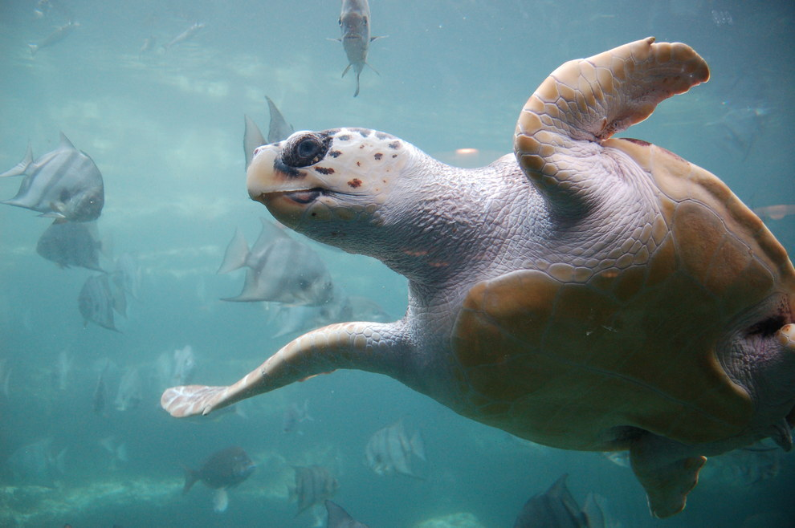

Миграция
Существуют прогнозы исчезновения до 30-40% видов растений и животных, поскольку их среда обитания будет изменяться быстрее,
чем они смогут приспособиться к этим изменениям.
Изучение изменения среды обитания.
1. Морские черепахи.
Две породы морских черепах совершают великие миграции. Черепахи начинают свою жизнь в Японии,
затем проплывают 13000 километров через Тихий океан, чтобы питаться крабами у побережья Мексики,
прежде чем вернуться обратно на пляж, где они родились, для гнездования.
